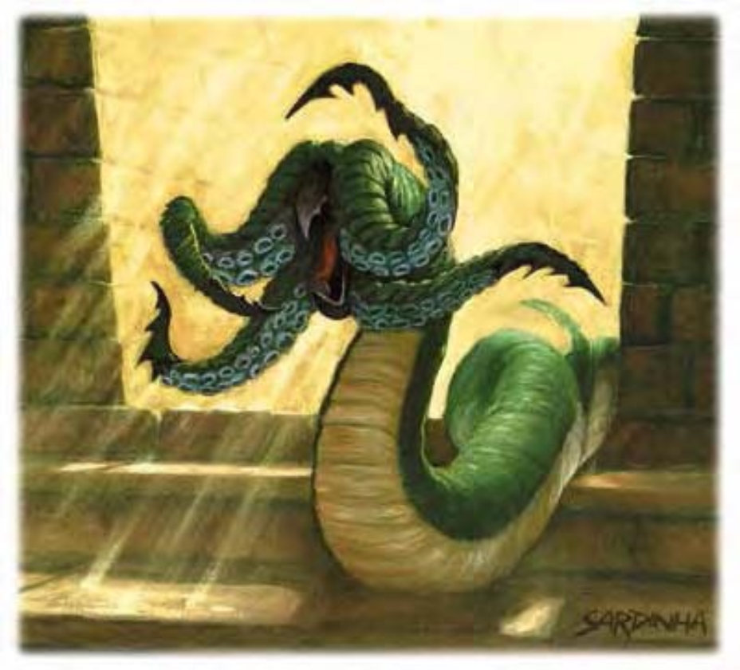

| 资料栏位 | 穴居攫怪 (Grick) 中型异怪 |
| 生命骰 | 2d8 (9HP) |
| 先攻 | +2 |
| 速度 | 30英尺 (6格)、攀爬20英尺 |
| 防御等级 | 16 (+2敏捷、+4天生)、接触12、措手不及14 |
| 基本攻击/擒抱 | +1 / +3 |
| 攻击 | 触手+3近战 (1d4+2) |
| 全力攻击 | 4触手+3近战 (1d4+2)、啮咬-2近战 (1d3+1) |
| 占据/触及 | 5英尺 / 5英尺 |
| 特殊攻击 | ― |
| 特殊能力 | 伤害减免10 / 魔法、黑暗视觉60英尺、灵敏嗅觉 |
| 豁免 | 强韧+0、反射+2、意志+5 |
| 属性 | 力量14、敏捷14、体质11、智力3、感知14、魅力5 |
| 技能 | 攀爬+10、躲藏+3*、聆听+6、侦察+6 |
| 专长 | 警觉、追踪B |
| 环境 | 地底 |
| 组织 | 单独或聚集 (2-4) |
| 挑战级数 | 3 |
| 宝藏 | 十分之一钱币、50%宝物、50%物品 |
| 阵营 | 通常绝对中立 |
| 进化 | 3-4HD (中型)；5-6HD (大型) |
| 等级修正值 | ― |
这种大虫似的怪物约有一人高，四只触手比人类手臂要长些。其分节的触手位于头中部的四个边上，身体也同样有分节。
穴居攫怪是隐藏于地底的掠食者，出没于地下城、洞穴与其他地下阴暗处，耐心地等候猎物上门。
成年穴居攫怪身长（从触手尖端到身体末端）约8英尺，重约200磅。体色皆偏暗，腹部为白色。
穴居攫怪的巢穴位在任何可以容纳他们身体的地方，如洞穴、地道、岩架与裂隙。他们不会收集宝藏，但巢穴中可能会有其受害者还没被吃掉物品。缺乏猎物时，穴居攫怪会爬上地表荒凉之处找寻猎物，使用触手打猎的方式与在地底时相似。这种生物并不喜欢室外环境，会尽快回到地底。
战斗穴居攫怪在饥饿或受威胁的状态下会发动攻击。他们会躲在来往频繁的地点，利用体色融入阴影。猎物（任何看起来会动的东西）靠近时，他们便会伸出触手。穴居攫怪橡胶般的身体似乎可以抵消所有攻击与身体比起来，嘴相对而言较小也较无力，因此穴居攫怪通常不会在杀死猎物的同时吃掉他，而是会将猎物拖回巢穴慢慢享用。
在计算伤害减免时，穴居攫怪的天生武器视为魔法武器。
复数的穴居攫怪并不会团体作战。每一只会各自攻击离自己最近的敌人，当猎物死亡或昏迷时，他们将立即结束战斗将之拖走。
技能：穴居攫怪在进行“攀爬”检定时具有+8种族加值。即使被冲撞或受威胁，他们在进行“攀爬”检定时都可以随时取10。
*穴居攫怪的体色使其在自然岩石区域内进行“躲藏”检定时具有+8种族加值。